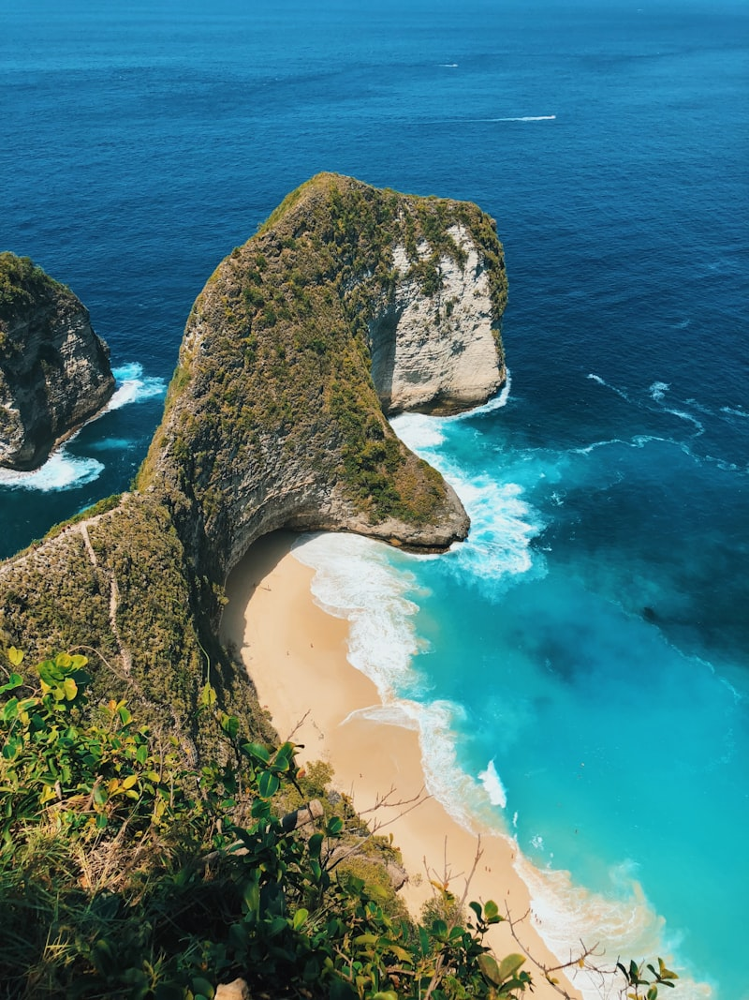
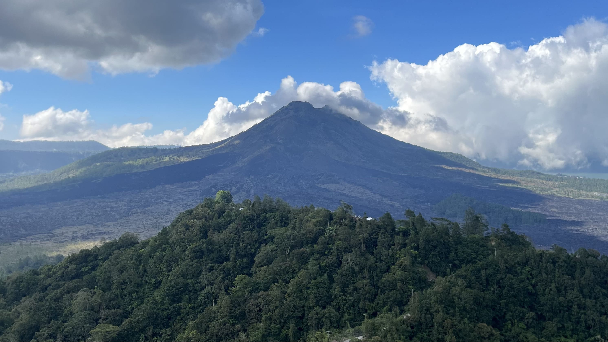
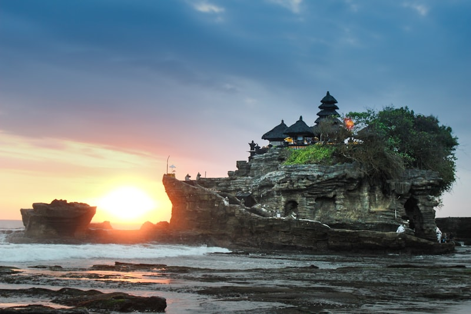
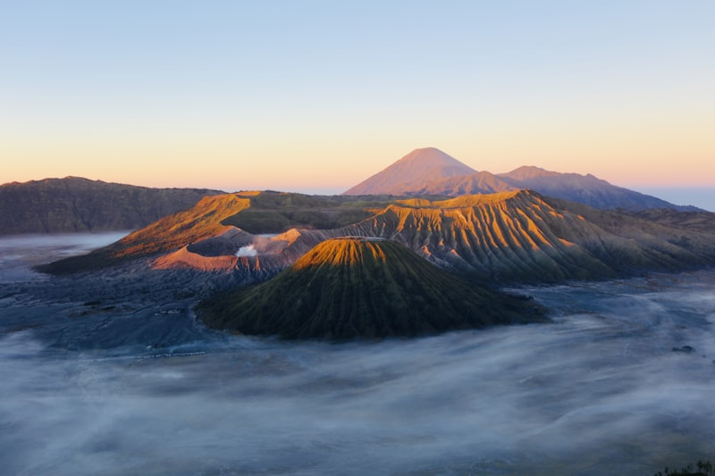

Kerucut Gunung Api & Pegunungan
BGS 7 - Gunung Payang
Kerucut Soliter Batuapung
Deskripsi Geologi
Kerucut soliter berbatuapung dasitik dengan tinggi sekitar 150 meter. Gunung Payang merupakan bukti aktivitas vulkanik eksplosif yang menghasilkan endapan batu apung yang kaya silika.
Lokasi & Riset
Batur UNESCO Global Geopark
Galeri Batur Geopark



